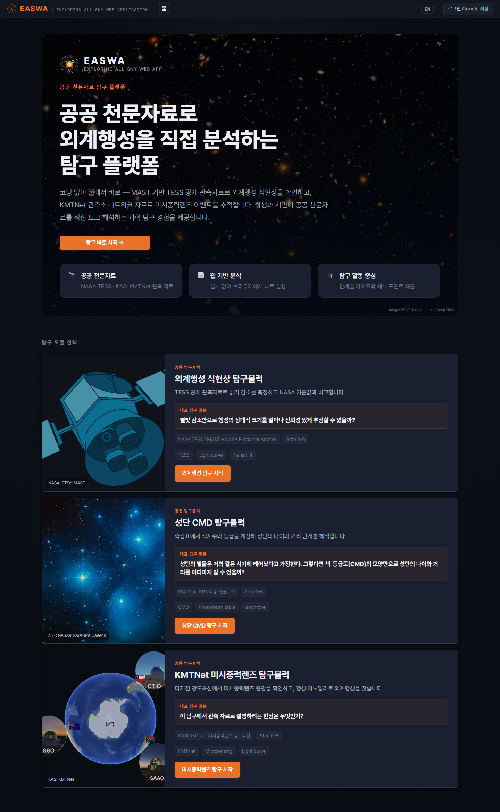
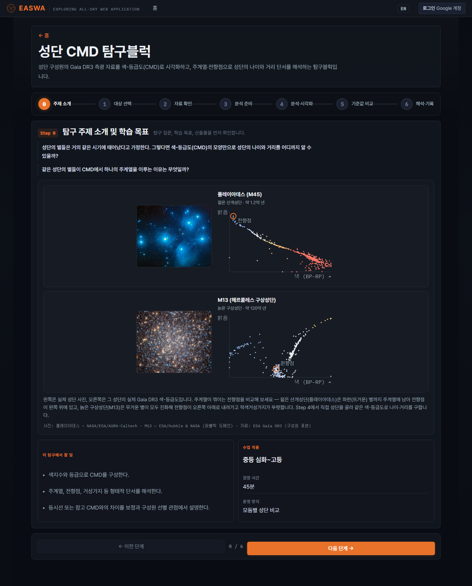
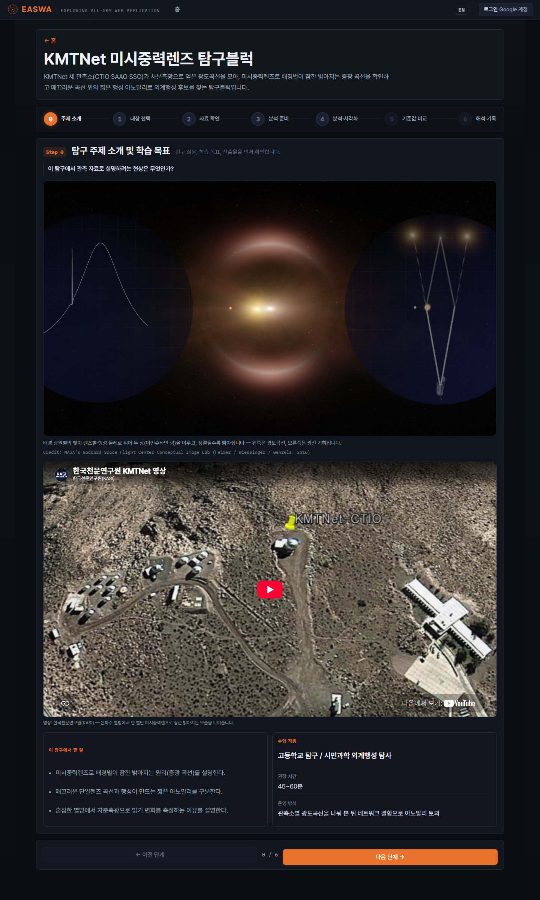
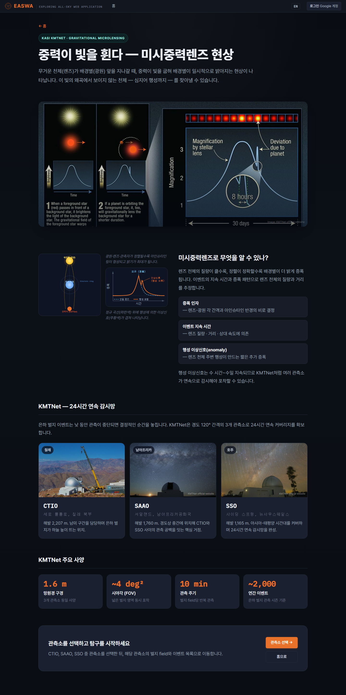
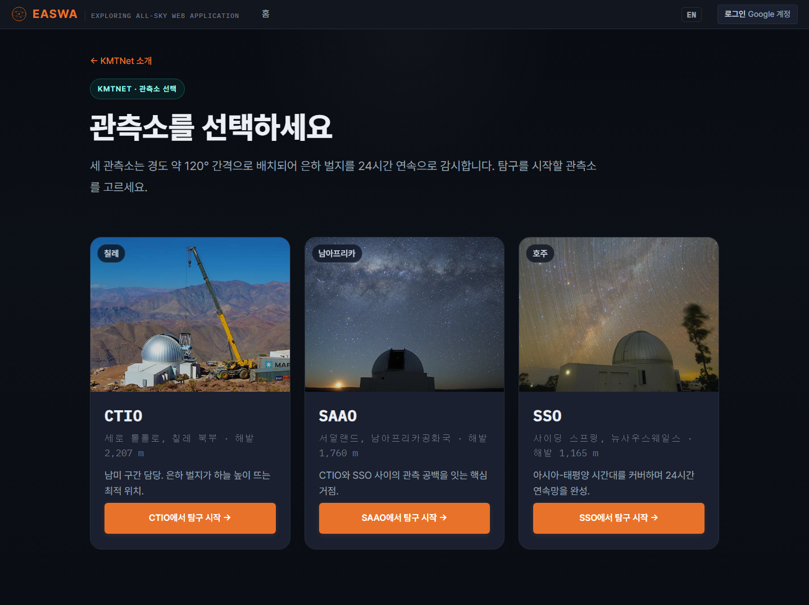
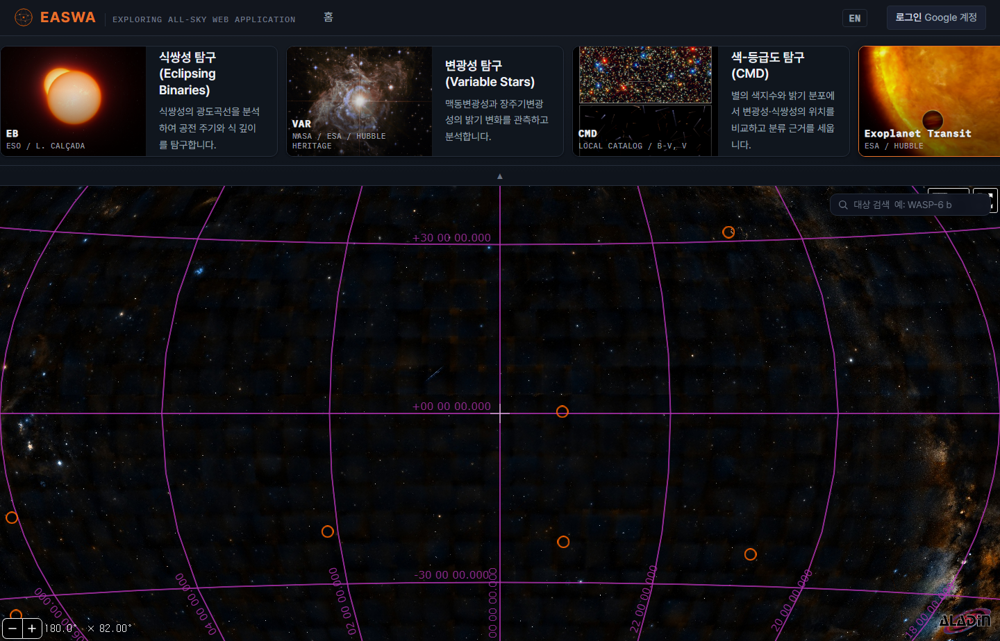
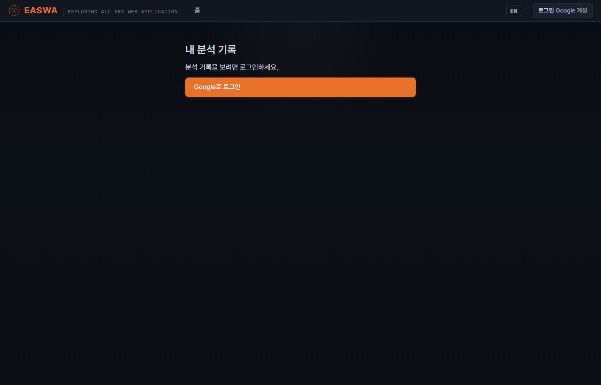
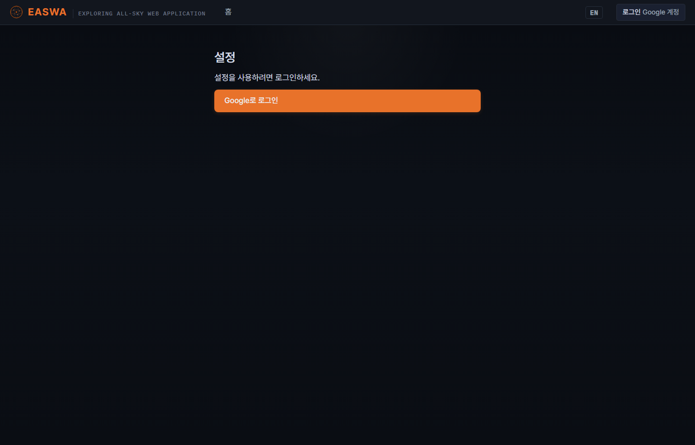

2026-08-11 · 라이브 easwa-webapp.onrender.com · 촬영 시점에 로컬 main · 라이브 ·
현장 전문가 검토 빌드(2956d24)가 셋 다 일치. 썸네일을 누르면 원본이 열린다.
docs/screens_live/ 아래에 있다.
screens_live/*.png — 각 화면의 진입 상태 (폭 1440) | 9장 |
screens_live/w1920/*.png — 위와 같은 화면, 폭 1920 | 9장 |
screens_live/flow/*.png — 탐구 흐름 Step 0~6 (폭 1440) | 11장 |
폴더별 설명은 각 폴더의 README.md 에 있다.
이 페이지는 screens_live/index.html.
폭 1440 · 내용 전체 높이. 같은 9장의 1920 폭 판은 w1920/ 에 있다.








Step 0 → 6 전체. 차등측광(1,229 프레임)과 모델 적합을 실제로 돌려서 Step 5·6 을 열었다. 산출값 Rp/R* = 0.1453 · χ²_red = 0.96 — 교사 시연 14건 중앙값(0.1457)과 0.0004 차이.